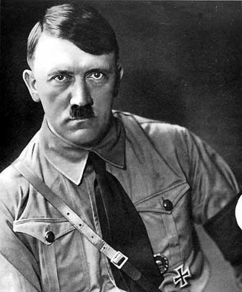

To understand why the second world war started you need to go back to “The Great War” or more known as World War One. To quickly sum it up: Most European countries were in alliances with each other in case of war. One of the alliances consisted of France and Russia along with Great Britain if a neutral country would be attacked. The second alliance consisted of Germany and Austro-Hungary. At this time a nationalist Serbian group named Black Hand supported a smaller group named
Mlada Bosna in assassinating the Austro-Hungarian prince Franz Ferdinand. The plan was to get Austro-Hungary to declare war on Serbia, Serbia had good relations with Russia who they knew would support them if they were to be attacked. Gavrilo Princip assassinated Franz Ferdinand and war was declared, however Serbia did not consider Austro-Hungarians alliance with Germany, who declared war on Russia and France after Russia declared war on Austria-Hungary.
After four years of brutal war Germany surrendered and accepted responsibility for the war along with reparations. This was known as the Treaty of Versailles and it plunged Germany in to economic chaos. This made extremist groups like communists and nationalists more appealing as they offered “solutions”.
At this time a man appeared, a man by the name of Adolf Hitler. Hitler had served almost the entire war and was awarded two iron crosses for bravery. Hitler saw the state of his country and was furious. His carrier started by holding speeches in beer halls where he expressed his frustration opinions, and a lot of people listened, this was a war hero who said what they wanted to hear. During one of his speeches a man by the name of Dietrich Eckart heard him and was impressed. Dietrich was a well-connected man and a member of the Free Workers Committee for a good peace (later to become the Nazi party). He started to fund and mentor Hitler and they amassed large crowds. Hitler’s popularity grew and he later became the leader of the party now renamed to “German Nationalist Socialist Worker’s party”.
In 1923 Hitler tried to take control over Munich by force. It failed and Hitler was trailed and sent to prison. Hitler’s trail gained notoriety all over Germany and the party gained more popularity thanks to it. While jailed he also wrote “Mein Kampf”, a book describing his political views and beliefs. Different accounts describe the books influence stating it had little influence and other saying it was a big hit.
The Nazi party’s influence kept slowly growing and they called for a referendum to abolish the Versailles treaty in December 22 - 1929. The referendum showed that 94% supported the referendum however the turnout was only 14%, a referendum needs at least 50% to be valid.
In 1933 the current president Paul von Hindenburg tried to get the Nazi party on his side as they held 230 seats in the Reichstag. They offered Hitler a position as vice-chancellor but he refused, demanding to be made chancellor. Hindenburg agree thinking he could control Hitler, he was wrong. On the 27 of February 1933 the Reichstag was burned down by Marinus von Lubbe along with four other supposedly communist sympathizers, however it’s speculated that they worked for the Nazi party in a plot so seize more power and destroy the reputation of the communist party. This worked very much in favor of the Nazis as Hitler had said for months that the communists were going to start a revolution to seize power.
This was the opportunity Hitler had been waiting for, he convinced President Paul von Hindenburg to enact the enabling act, this granted the chancellor the ability to enact new laws without the consent of other parties. Hitler now had full power to ban all other parties and enabling his Sturmabteilung (SA) Stormtroopers (their duty was to protect party rallies and disrupt other organizations rallies/meetings) to destroy any resistance.
Night of the long knives: On June 30th 1934 an event called Night of the long knives took place. This was the purge of SA officers who Hitler thought would lead a revolution against him. If Hitler were to rebuild Germany, he would need the support of industries and the army leaders. However, the industries and to an extent the army were growing skeptical of the SA as they numbered around 4 million and were acting violently against innocent civilians and stores.
At the end of February 1934 Hitler held a meeting with Ernst Röhn, Leader of the SA along with German defence minister Werner von Blomberg. In the meeting Hitler stated that the SA would not be a military force and limited to political functions. Röhn agreed with Hitler and signed an agreement with Blomberg, however he later expressed he had no intention of honoring the agreement stating in a press conference: “The SA is the National Socialist Revolution”. Röhn also announced a conference with the other top members of the SA in a resort near Munich which Hitler promised to attend to sort out the tension.
On June 17th Vice Chancellor Franz von Papen stunned everyone by criticizing the behavior of the SA and also focused on the possibility that Röhn and the rest of the SA were going to lead a second revolution "Have we experienced an anti-Marxist revolution in order to put through a Marxist program?" This speech put more tension between the army leaders and the SA.
A few days later on the 21th of June Hitler along with Werner von Blomberg went to President Hindenburg’s country estate. Hindenburg whose health was slowly failing told Hitler to deal with the SA or the military would take power and declare martial law, ending the Nazis power. At the same time, Heinrich Himmler Leader of the Schutzstaffel (SS) and Hermann Göring began to spread rumors about the SA planning a coup.
By the 30th of June Hitler had had enough of the SA who were taking to the streets. The SS lead by Himmler had days before made a deal with the army to deal with the SA threat, the army was to provide any necessary support with weapons and stay in their barracks while the SS took care of everything. After Röhn and the other leaders were captured and executed Hitler called Göring back in Berlin to initiate the purge of SA officers and other political figures.
President Hindenburg also died on the 2 of august – 1934 by natural causes leaving no one to oppose Hitlers rise to Führer.

Picture of Adolf Hitler. Source
Information might not be fully true, there are conflicting information